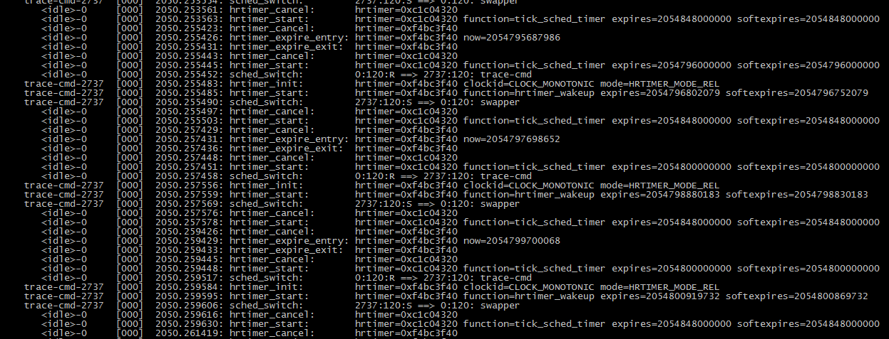
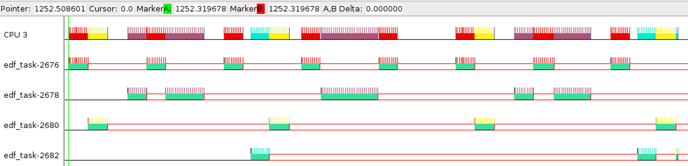

trace-cmd与kernelshark使用总结
1.trace-cmd
trace-cmd是对ftrace的封装，是一个可以用来跟踪linux内核中事件(event)发生的时间、次数等的工具。
首先需要安装trace-cmd:
$sudo aptitude install trace-cmd
使用也非常简单:
$sudo trace-cmd record -e sched_switch
-e 参数指出需要跟踪的事件，这里的sched_switch指的是进程切换，还可以是hrtimer、irq等，例如:
$sudo trace-cmd record -e sched_switch -e hrtimer*
命令输完回车后，trace-cmd就开始记录内核中事件的发生了，ctrl+C 停止跟踪，此时会生成一个trace.dat文件，相当于一个log吧。
trace.dat里的内容不易读，trace-cmd提供分析trace.dat的功能:
$trace-cmd report
就可以看到所跟踪的事件发生的情况了，和下图差不多。

也可以重定向到一个文本文件中再做分析，比如:
$trace-cmd report > report.txt
跟踪的报告就存入report.txt中了，可以用Perl等来处理。
注:使用trace-cmd需要内核开启ftrace，即在编译内核make menuconfig时，选择下面的选项:
Kernel Hacking -> Tracers -> Kernel Function Tracer
2.kernelshark
kernelshark提供了对trace.dat的可视化分析，首先安装:
$sudo aptitude install kernelshark
然后在trace.dat所在的目录输入:
$kernelshark
即可看到图形化界面了:

The End!!